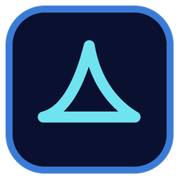

SharkCutHoja de ruta
Lo que viene en SharkCut, versión a versión. Casi todo sale de lo que nos cuentan quienes lo prueban 💙
Última actualización: 31 de octubre de 2026 · El orden puede cambiar con el feedback.
-
0.1.9Próximamente
Línea de tiempo
- Transiciones de entrada y de salida, con marca de centro e imán al moverlas.
- Altura de las pistas ajustable a tu gusto.
-
0.2.0Gran salto
Nueva aleta y atajos a tu gusto 🦈
- Logo renovado, más reconocible como aleta de tiburón.
- Cabezal con forma de aleta, la misma del logo.
- Atajos de teclado personalizables, ideales para teclados compactos.
-
0.2.1Próximamente
Propiedades a fondo
- Una pestaña por efecto en Propiedades, para tenerlo todo ordenado.
- Línea de tiempo de keyframes dentro de Propiedades.
- Máscaras con formas simples (rectángulo, elipse…).
Más adelante 🌊
Paneles a tu manera
Muévelos, cambia su tamaño y guarda tus diseños.
Carpetas vinculadas
Tus carpetas de uso frecuente, a mano en todos los proyectos.
Descargas en el instalador
Elige al instalar si quieres bajar ya el modelo de subtítulos.
Tutorial
Una guía dentro de la app para empezar y descubrir los trucos.
Velocidad de los clips
Acelera, ralentiza y crea rampas de velocidad.
Más idiomas
SharkCut en otros idiomas, elegibles al instalar.
Ya publicadas ✨
0.1.8 31 de octubre de 2026
- Cambia el lienzo y los fps de una secuencia ya creada y guarda tus propios ajustes.
- Resolución de la vista previa (completa, 1/2 o 1/4) para que vaya más fluida.
- Caché de medios en una carpeta común: compartida entre proyectos y fácil de vaciar.
- La línea de tiempo se desplaza sola al arrastrar hasta su borde.
- Ondas listas al importar y sin proyectos «Sin título» de más.
0.1.7 28 de octubre de 2026
- Editor de texto: textos libres que colocas en cualquier parte de la pantalla, con su estilo, keyframes y efectos.
- Las pistas de audio de tus grabaciones por separado (por ejemplo, micrófono y juego en un MKV de OBS).
- Cortes sin sorpresas: en un corte ya no aparece un instante el clip anterior.
- La imagen ya no se queda quieta al volver a reproducir desde un punto ya visto.
0.1.6 28 de octubre de 2026
- Tinte de color como efecto y un selector de color completo en todas las muestras.
- Colores sólidos para fondos y rellenos, desde Medios con un clic derecho.
- Vista previa más fiable: los clips que a veces no aparecían ya se muestran.
- Girar 90° con un clic: un video horizontal llena tu lienzo vertical.
0.1.5 27 de octubre de 2026
- Los sonidos de SharkCut van a su propia carpeta de Medios.
- Medios se abre con miniaturas y recuerda la vista que elijas.
- Corta subtítulos con la cuchilla y alárgalos desde su borde, aunque estén pegados.
- Si un clip tarda en aparecer o la imagen se congela, SharkCut lo anota en su registro.
0.1.4 26 de octubre de 2026
- El cabezal llega hasta el final exacto de la secuencia.
- Un clic en la flecha de una transición la pone en el cabezal, con su sonido.
- «Preparar para» YouTube o TikTok en Exportar.
- Apartado «Hardware y codificadores»: tarjeta gráfica, decodificación y codificador en uso.
- Ondas de audio unas 4 veces más rápidas.
0.1.3 26 de octubre de 2026
- Escucha los efectos de sonido antes de usarlos.
- Doble clic en un hueco de Medios para importar.
- Botones de zoom arriba a la derecha y atajos a la vista en las ayudas.
- El punto de anclaje, explicado paso a paso.
- Alt + rueda para desplazarte entre pistas.
0.1.2 25 de octubre de 2026
- Arrastra los medios nada más importarlos.
- Cortes sin tirones durante la reproducción.
- Clips muy cortos fáciles de seleccionar con la línea de tiempo alejada.
- La línea de tiempo sigue al cabezal al saltar entre cortes.
- Pantalla «Acerca de».
0.1.1 22 de octubre de 2026
- Imágenes PNG y JPG en la línea de tiempo.
- Las transiciones y su sonido se mueven juntos.
- Botón «Proxies» más claro.
0.1.0 21 de octubre de 2026
- Primera versión de acceso anticipado.
¿Echas algo en falta o algo no va como esperas? Cuéntanoslo y entra en la ruta.
Enviar una idea o un fallo